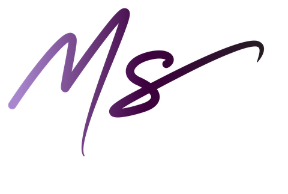

מה באמת מניע אותך - גם כשקשה לשים על זה את האצבע
כמה שאלות קצרות, וכל אחת מציגה שני משפטים. בוחרים את מה שמתאר אתכם יותר - וממפים את הצרכים שמניעים אתכם באמת.
השם ילווה את התוצאה (אפשר גם כינוי).
מה מתאר אותך יותר?
רוצה לחדד? עוד 5 שאלות קצרות ייתנו דיוק מרבי לפרופיל שלך.
כדי לקבל את המיפוי המלא, נשאיר שם ומייל - והתוצאה נפתחת מיד.
הפרטים נשמרים לצורך שליחת התוצאה בלבד. אפשר להסיר בקשה בכל עת.

מורן סמון · מפתחת שיטת קש"במצפן לקש"ב שלי הוא נקודת פתיחה למחשבה - לא אבחון ולא תחליף לליווי מקצועי. ברגעים של מצוקה ממשית, קו הסיוע של ער"ן זמין תמיד: 1201.
מבוסס על מודל ששת הצרכים האנושיים, בהשראת טוני רובינס, בעיבוד והתאמה לשיטת קש"ב - קשר. שקט. בטחון. לניהול משברים ועומס רגשי.
מורן סמון, עו"ד ומגשרת
מורן סמון - חברת עורכי דין ומגשרים · מתמחים בניהול משברים משפחתיים בקש"ב - קשר. שקט. בטחון.
רח' היצירה 3 (בית ש.א.פ.), רמת גן 5252141 | טל': 03-5662260 | פקס: 03-5662261
office@moransamun.co.il | moransamun.co.il
הופק באמצעות מצפן לקש"ב שלי